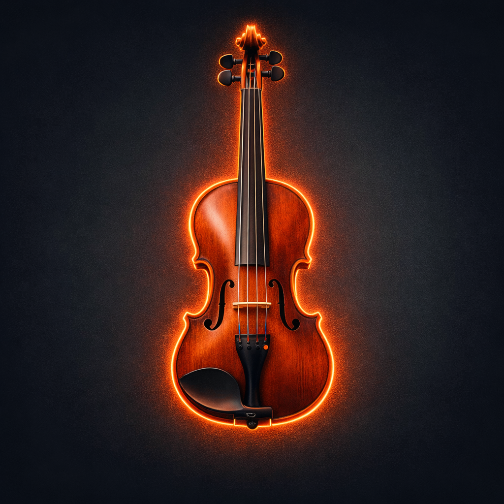
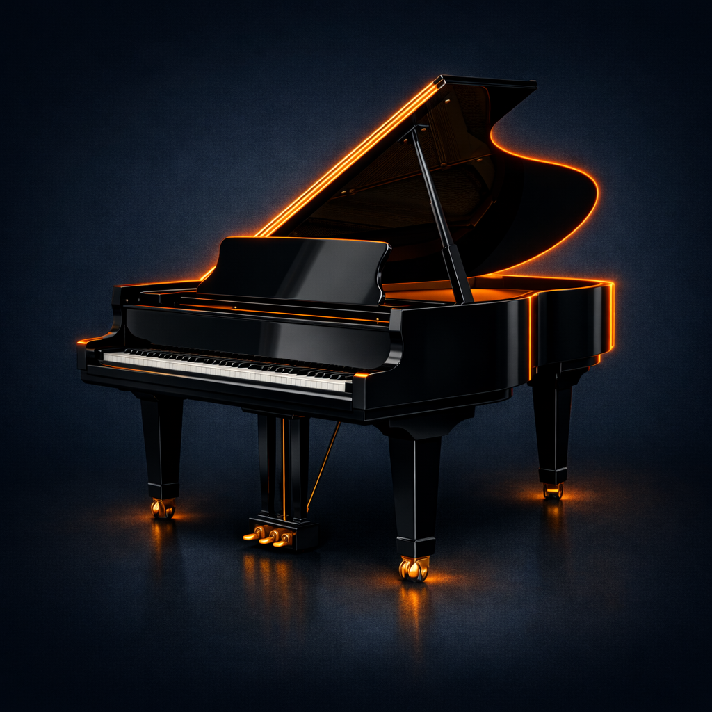
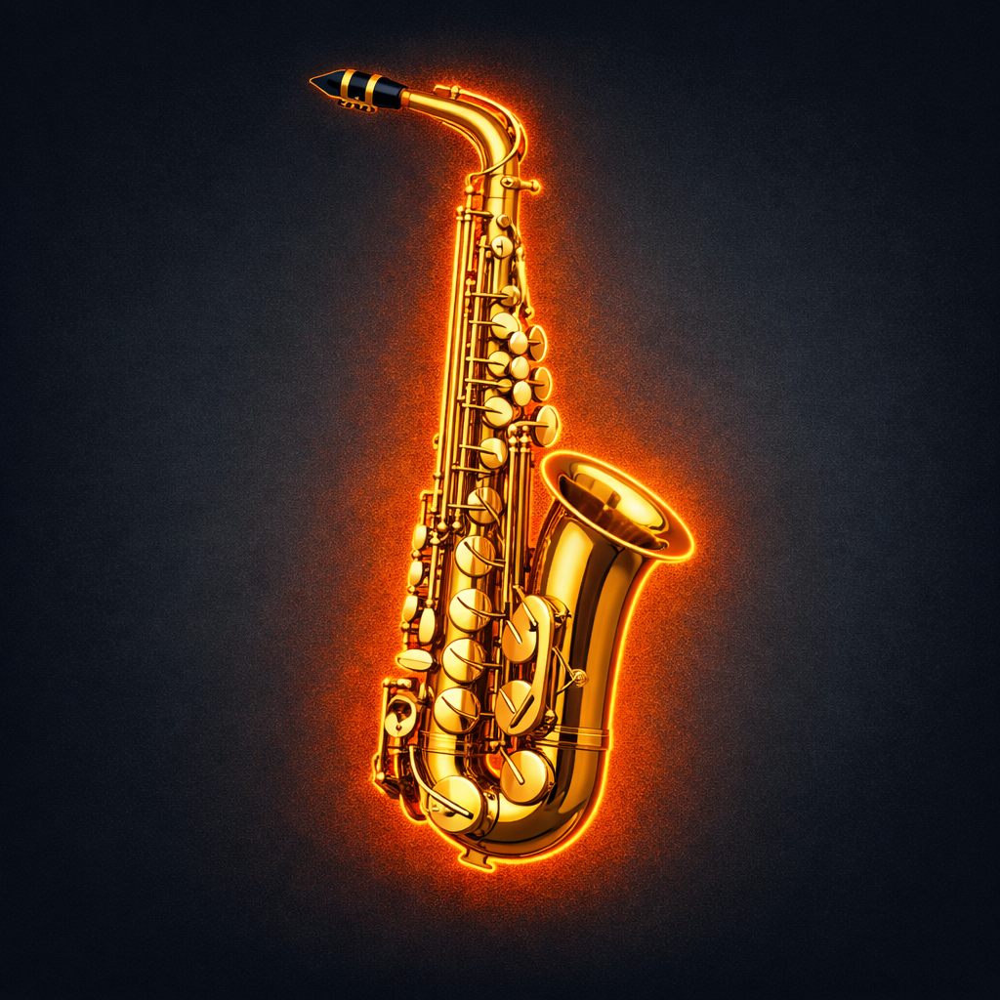
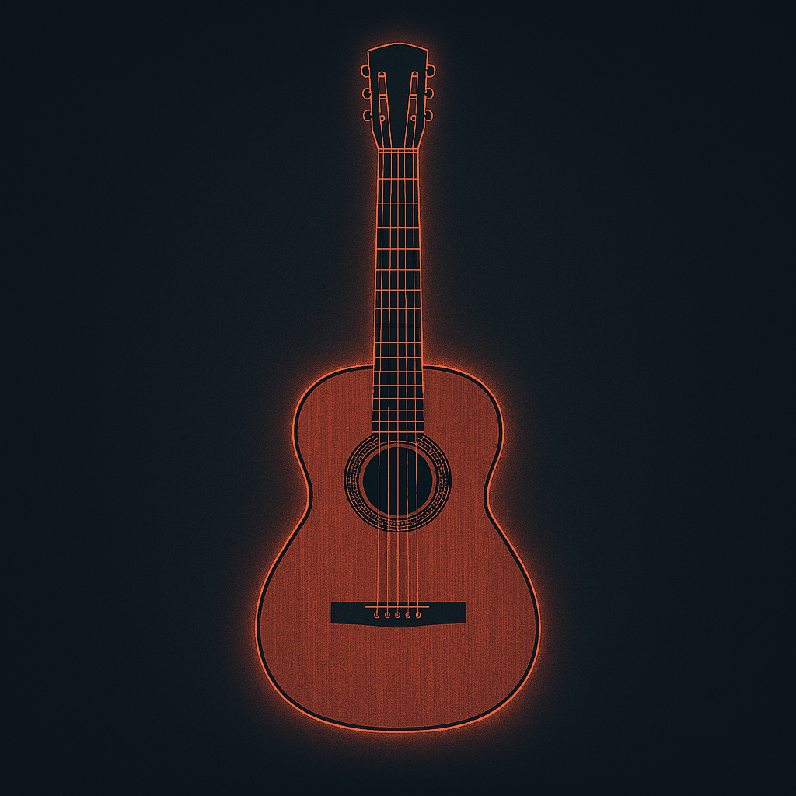
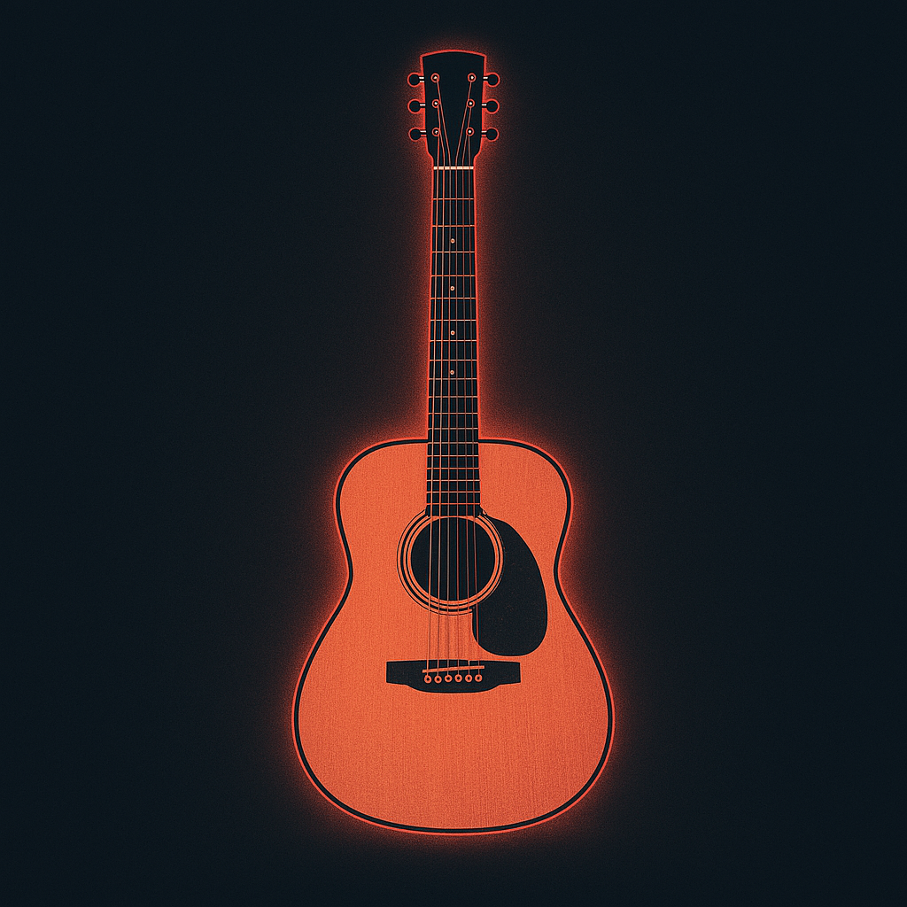
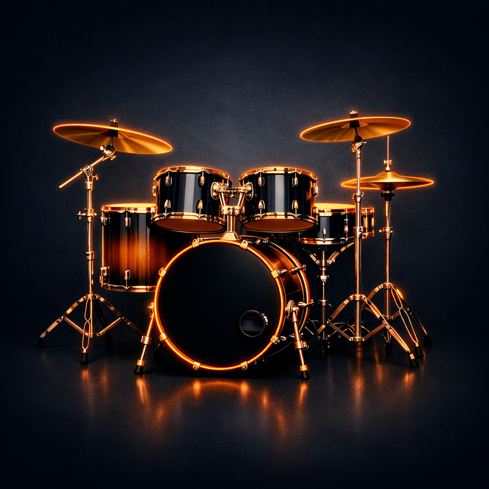
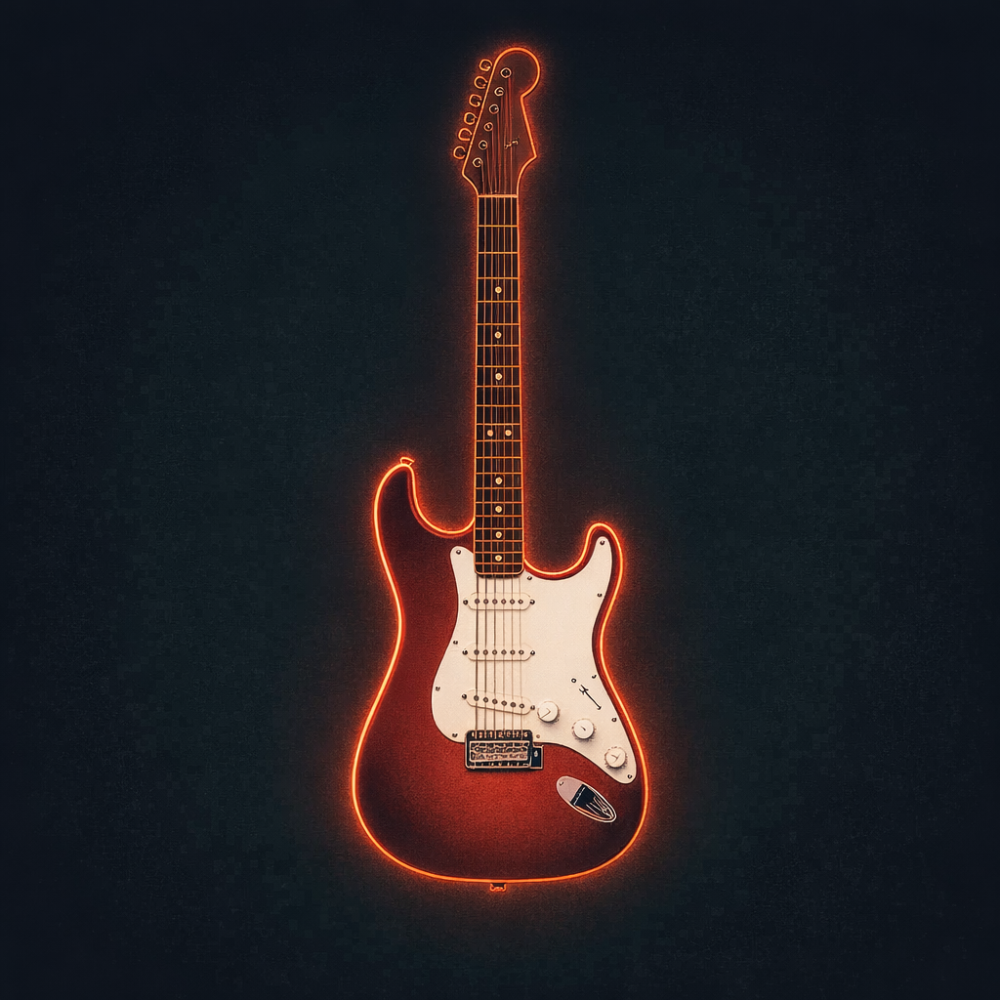
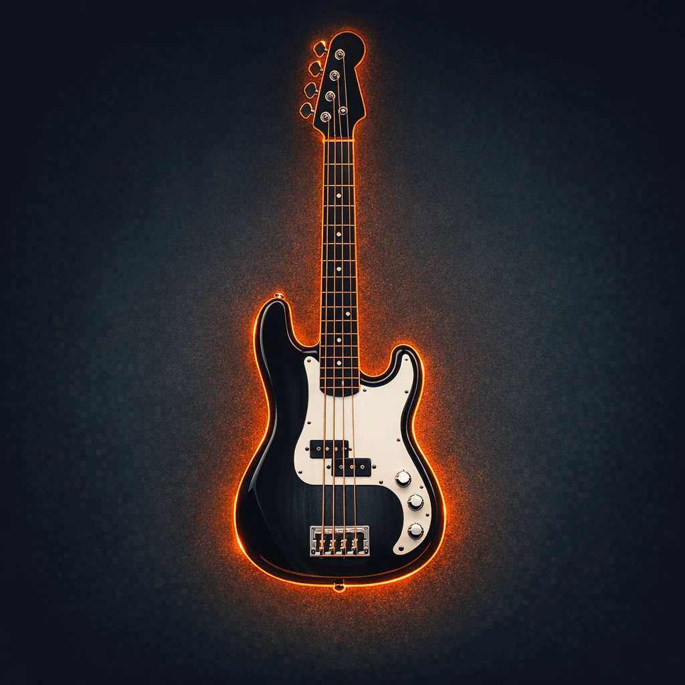

Tap twice or double‑click an instrument to play or stop it.

Violin
The Violin took shape in 16th century Italy when makers like Amati and later Stradivari refined earlier bowed instruments into a lighter, more responsive form. Its clear tone became central to classical music, carrying both solo lines and ensemble roles with ease. Over time it moved into folk traditions, jazz, and film scores, always keeping that same blend of precision and emotional pull.

Piano
The modern Piano came in early 18th century Italy when Bartolomeo Cristofori replaced the plucked mechanism of earlier keyboards with hammers that responded to touch. That transition better control over dynamics, making the instrument suitable for both delicate lines and dramatic passages. Across centuries, and even today, it has moved through classical halls, jazz clubs, and film scores, always carrying the same balance of clarity and weight.

Saxophone
The Saxophone came in 19th century Belgium when Adolphe Sax set out to bridge the gap between woodwinds and brass, creating an instrument with a reed’s flexibility and a horn’s projection. Its warm, vocal tone later became a defining voice in jazz, carrying everything from soft ballads to sharp, rhythmic lines. In the modern era it can effortlessly move between genres, but still holds the same expressive pull that first set it apart.

Classical Guitar
Preceded by Moorish Influence and Iberian craft, the modern Classical Guitar emerged in the 19th century Spain when Antonio Torres built it with gut strings. This gave the guitar a softer and brighter sound, which became a central part of Spanish classical music, and the pulse of flamenco. Today it is more commonly constructed with nylon strings and features across many genres, with its sound still evergreen.

Steel‑String Acoustic Guitar
The steel‑string acoustic took shape in 19th century America when C. F. Martin rebuilt older European guitars to withstand the pull of metal strings. That shift created a louder, grittier sound that matched the needs of early blues and folk musicians. In the modern world it moves easily between genres, but remains just as impactful.

Drum Kit
The Drum Kit emerged in early 20th century America when separate percussion instruments were brought together so one player could handle the rhythm alone. The introduction of the bass‑drum pedal and later the hi‑hat gave drummers new ways to shape time, turning simple patterns into full grooves. From jazz swing to rock backbeats and modern electronic‑influenced styles, the kit has remained the core pulse that holds everything together.

Electric Guitar
Coming from early attempts to amplify the guitar for busy bandstands, the Electric Guitar took form in 20th century America with the first magnetic pickup designs. Solid-body models soon followed, reducing feedback and giving more control over sustain and tone. Its sharp, amplified sound became one of the defining sounds of early rock and roll. In current times, the instrument is shaped as much by its electronics as its build, and is promiment across blues, rock, and modern music.

Bass Guitar
Designed to replace the large upright bass on crowded stages, the Bass Guitar arrived in the mid‑20th century with Leo Fender’s first solid‑body, fretted, and easily portable design. Its amplified low end gave bands a clearer rhythmic foundation that gave funk, jazz, and disco that distinct groovy sound. Currently, it also remains as an anchor in pop and modern music.